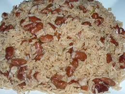

Diri Kole Ak Pwa

Picture of a Well Prepared Diri Kole
Diri kole ak pwa, a beloved bean and rice dish in Haitian cuisine, owes its rich flavor to epis, a vibrant, peppery green seasoning similar to sofrito.
Ingredients
EPIS
- ½ small green bell pepper, ribs and seeds removed, coarsely chopped
- ½ small white onion, coarsely chopped
- ½ large shallot, coarsely chopped
- ½ celery stalk, coarsely chopped
- 1 scallion, coarsely chopped
- ½ Scotch bonnet or habanero chile
- 2 garlic cloves
- 1 whole clove
- ½ cup (lightly packed) cilantro leaves with tender stems
- ½ cup (lightly packed) parsley leaves with tender stems
- 2 Tbsp. extra-virgin olive oil
- 1 Tbsp. thyme leaves
- 2¼ tsp. distilled white vinegar
- 2¼ tsp. fresh lime juice
BEANS
- 3 scallions, halved lengthwise
- 3 garlic cloves
- ¾ cup dried kidney beans, soaked overnight, drained
- 1½ tsp. Diamond Crystal or 1 tsp. Morton kosher salt
RICE AND ASSEMBLY
- 2 cups basmati rice
- ¼ cup extra-virgin olive oil
- 1 medium onion, finely chopped
- 1 Tbsp. Diamond Crystal or 1¾ tsp. Morton kosher salt
- 5 garlic cloves, finely chopped
- 3 sprigs thyme
- 1½ tsp. freshly ground black pepper
- 1 Scotch bonnet or habanero chile
STEPS
EPIS
-
Pulse bell pepper, onion, shallot, celery, scallion, chile, garlic, clove, cilantro, parsley, oil, thyme, vinegar, and lime juice in a food processor or blender until a chunky sauce forms. Transfer epis to a small bowl and set aside.
-
Do Ahead: Epis can be made 4 days ahead. Transfer to an airtight container; cover and chill.
BEANS
-
Bring scallions, garlic, beans, salt, and 6 cups water to a boil in a medium pot. Reduce heat and simmer until beans are tender and the skins peel away when you blow on them, 55–65 minutes. Discard scallions and garlic. Drain beans in a fine-mesh sieve set over a medium bowl. Measure out 3 cups bean broth (add water if short). Set beans and broth aside.
RICE AND ASSEMBLY
-
Rinse rice in a fine-mesh sieve under cold running water until water runs clear; drain well and set aside.
-
Heat oil in a large Dutch oven or other heavy pot over medium-high. Add onion and salt and cook, stirring occasionally, until onion is light golden around the edges, 5–7 minutes. Reduce heat to medium and add garlic; cook, stirring, until fragrant, about 1 minute. Stir in thyme, pepper, and 2 Tbsp. reserved epis; cook, stirring, until fragrant, about 1 minute.
-
Gently stir in reserved beans, then pour in reserved bean broth and bring to a boil. Stir in chile and reserved rice. Reduce heat to low and cook, covered, until rice is tender and liquid is absorbed, 15–20 minutes. Remove pot from heat and let sit, still covered, 10 minutes.
-
Uncover pot; remove and discard thyme. Fluff rice with a fork and divide among plates.